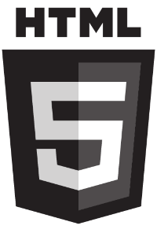

Para formatar uma frase em formato de parágrafo eu uso entre as tags <p> e </p>.
Se eu precisar quebrar
uma linha específica eu uso o a tag <br>.
Vamos adicionar alguns símbolos
® © ™ € £ ¥ ¢ Δ ↑Para adicionar emoji usa o comando &#x + o código em binário do emoji do site emojipédia.
Para conseguir boas fotos e com direitos autorais livres vá nesses seguintes sites:
https://unsplash.com/pt-br
https://www.pexels.com/pt-br/
e no própio google indo no google imagens e logo em seguida em ferramentas.
Para adicionar imagem usa essa tag, o tamanho da imagem deve ser redimensionado e exportado do gimp pra uma visão melhor no site
Podemos também carregar imagens que estão em subpastas.

Também é possivel carregar imagens externas por meio de links apenas colando na frente da tag de adicionar imagens.
Para adicionar o icon ao lado do título do site, pesquisar no site: https://www.iconarchive.com
Para criar esse icone pode usa o site: https://favicon.io
Nessa frase temo um termo em negrito usando a tag B(não semântica), só tem sentido de forma;
Nesta frase, tenho um termo termo em destaque utilizando a tag STRONG(semântica), além da forma da um sentido de destaque - use sempre essa;
Nessa frase temo um termo em enfâse utilizando a tag EM.(semântica) - use sempre essa
Nesta frase temos um termo em itálico utilizando a tag I(não semântica).
Podemos criar também um texto marcado usando a tag MARK.
Estamos criando um texto grande e um texto pequeno nesse parágrafo.
Podemos marcaum texto como excluído para indicar que ele deve ser lido, mas não considerado.
Podemo marcar um texto como inserido para dar uma enfâse e indicar que ele foi adicionado depois. (sublinhado)
Para inserir coisas do tipo X20+3
Para inserir coisas do tipo H2O
O comando document.getElementByID('teste')é escrito em linguagem JavaScript.
num= int(input('Digite um número'))
if num % 2 == 0;
print(f'O número {num} é PAR')
else:
print(f'O número {num} é ÍMPAR')
print('fim do programa')
Como diria o pai de um amigo: O computador é um burro muito rápido.
Segundo Jeff Noble, no seu livro HTML para leigos:
A diferença entre elementos online e um bloco de texto é importante. Os elemento HTML neste capítulo descrevem os blocos de texto.
Estou estudando HTML e CSS
Você pode acessar o meu (com tag que vai abrir em outra aba) perfil no github
Você também pode acessar o meu (sem tag que vai abri em outra aba) instragram
Está é a primeira página do site. Se você quiser pode acessar a segunda página.